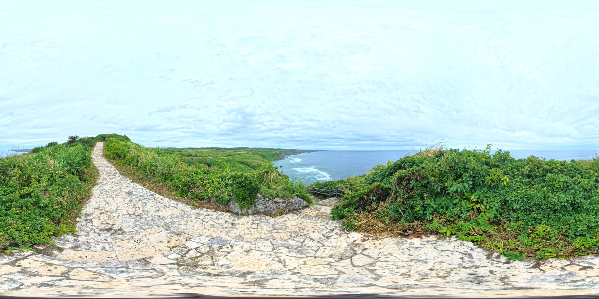
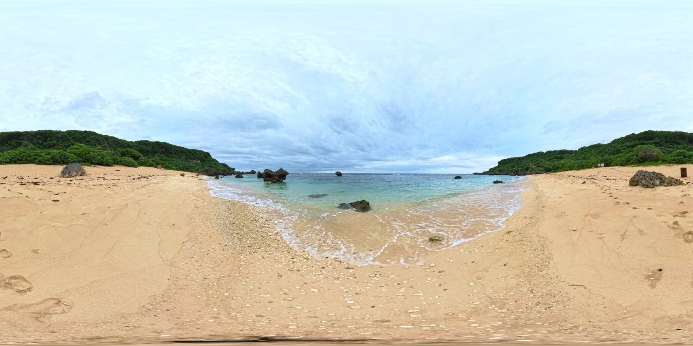
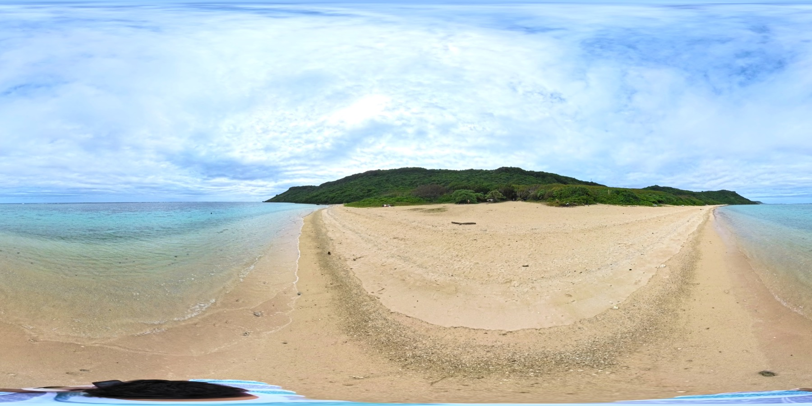

Scene 01 ― 崖の上 / 海抜20m
断崖の遊歩道
サンゴ石の小径をたどって、群青の海を見下ろす。旅はいちばん高いところから始まる。
宮古島南岸・城辺エリアの展望遊歩道。眼下のリーフに砕ける白波と、沖へ向かって深くなる青のグラデーションが一望できます。
▲ もう一度タップで閉じる
＋ くわしく
Miyakojima — 360° Virtual Tour
MIYAKO BLUE WALK
断崖から入り江へ、宮古島の東南海岸をあるく3シーン。
その青は、画面越しでも息をのむ。
Prologue — 0m
崖の上で見下ろす群青。波打ち際で透ける水色。ラグーンに広がるエメラルド。 このページを下へ潜るほど、あなたは海に近づいていきます。 3つのシーンをたどって、いちばん深い青まで。

Scene 01 ― 崖の上 / 海抜20m
サンゴ石の小径をたどって、群青の海を見下ろす。旅はいちばん高いところから始まる。
宮古島南岸・城辺エリアの展望遊歩道。眼下のリーフに砕ける白波と、沖へ向かって深くなる青のグラデーションが一望できます。
▲ もう一度タップで閉じる
＋ くわしく

Scene 02 ― 波打ち際 / 0m
崖を降りると、岩に抱かれた小さな浜。波の音だけが聞こえる、足元まで透ける海。
両側を琉球石灰岩の岩場に囲まれた隠れ家のようなビーチ。人が少なく、砂とサンゴ礫の浜から「宮古ブルー」の透明度を間近に感じられます。
▲ もう一度タップで閉じる
＋ くわしく

Scene 03 ― ラグーン / 水中へ
遠浅のラグーンに、サンゴと熱帯魚。シュノーケルの聖地で、青のいちばん奥へ。
宮古島東岸を代表するシュノーケリングスポット。浅瀬からサンゴ礁が広がり、運が良ければウミガメに出会えることでも知られています。
▲ もう一度タップで閉じる
＋ くわしく
Deepest Blue — 18m
矢印（ホットスポット）をたどって、3つのシーンを自由にあるけます。
ドラッグで、ぐるり360°。